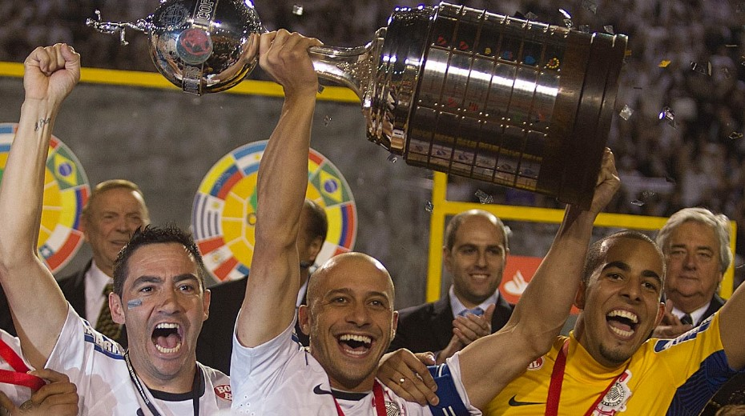
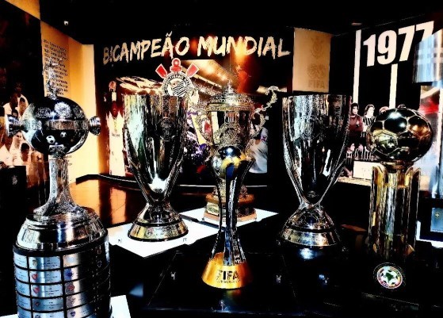
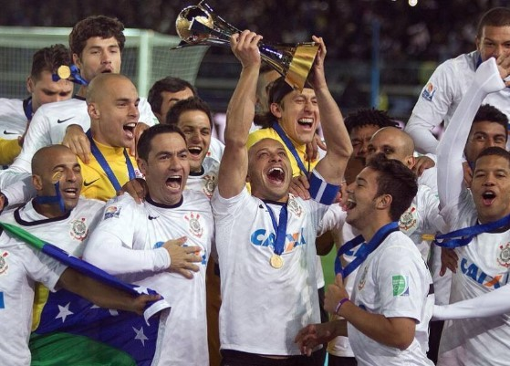

TÍTULOS DO CORINTHIANS

MUNDIAL FIFA INTERCLUBES (2)
2000; 2012
LIBERTADORES DA AMÉRICA (1)
2012
LIBERTADORES DA AMÉRICA DE FUTEBOL FEMININO (4)
2017; 2019; 2021; 2023
RECOPA SUL-AMERICANA (1)
2013
CAMPEONATO BRASILEIRO (7)
1990; 1998; 1999; 2005; 2011; 2015; 2017
CAMPEONATO BRASILEIRO FEMININO (5)
2018; 2020; 2021; 2022; 2023
COPA DO BRASIL (3)
1995; 2002; 2009
COPA DO BRASIL FEMININA (1)
2016
TAÇA RIO-SÃO PAULO (5)
1950; 1953; 1954; 1966; 2002
CAMPEONATO PAULISTA (30)
1914; 1916; 1922; 1923; 1924; 1928; 1929; 1930; 1937; 1938; 1939; 1941; 1951; 1952; 1954;
1977; 1979; 1982; 1983; 1988; 1995; 1997; 1999; 2001; 2003; 2009; 2013; 2017; 2018; 2019
CAMPEONATO PAULISTA FEMININO (3)
2019; 2020; 2021; 2023;
COPA PAULISTA FEMININA (1)
2022
SUPERCOPA DO BRASIL (1)
1991
SUPERCOPA DO BRASIL FEMININA (3)
2022; 2023; 2024
CAMPEONATO BRASILEIRO SÉRIE B (1)
2008
TAÇA COMPETÊNCIA (3)
1922; 1923; 1924
TAÇA CIDADE DE SÃO PAULO (6)
1922; 1942; 1943; 1947; 1948; 1952
TORNEIO INÍCIO DO PAULISTA (9)
1919; 1920; 1921; 1929; 1936; 1938; 1941; 1944; 1955
TAÇA CITTÁ DE FIRENZE (ITA)
1929
PEQUENA TAÇA DO MUNDO
1953
TORNEIO INTERNACIONAL CHARLES MULLER (BRA)
1955
COPA DO ATLÂNTICO
1956
COPA CIDADE DE TURIM (ITA)
1966; 1969
TORNEIO COSTA DO SOL (ESP)
1969
TROFEU APOLO V (EUA)
1969
COPA SÃO PAULO (BRA)
1975
COPA DA FEIRA DE HIDALGO (MEX)
1981
COPA DAS NAÇÕES (EUA)
1985
TORNEIO DE VERÃO CIDADE DE SANTOS (BRA)
1986; 1987
GALO DA VÁRZEA
1910; 1913
TAÇA BENEFICÊNCIA ESPANHOLA
1915; 1916
TAÇA CRONISTAS ESPORTIVOS
1916
TAÇA OFERECIDA PELO DR. ALCÂNTARA MACHADO
1916
TAÇA OFERECIDA PELO SR. CELINHO AMBRÓSIO
1917
TAÇA AMÍLCAR BARBUY
1919
TAÇA UNIÃO BRASIL
1919
TAÇA 47
1919
TAÇA NECO
1920
TAÇA DOUTOR ARNALDO VIEIRA DE CARVALHO
1920
TAÇA PREFEITURA MUNICIPAL DE GUARATINGUETÁ
1920
TAÇA IDA
1921
TAÇA ANTARCTICA
1921
TAÇA AO PREÇO FIXO
1921
CENTENÁRIO DA INDEPENDÊNCIA
1922
CAMPEÃO DO CENTENÁRIO
1922
CAMPEÃO DOS CENTENÁRIOS
1922; 1954
TAÇA SACADURA CABRAL E GAGO COUTINHO
1922
TAÇA CÂNTARA PORTUGÁLIA
1922
TAÇA BALLOR
1923; 1924
TAÇA JOALHERIA CASTRO
1925
TAÇA GUIDO GIACOMINELLI
1925
TAÇA AGÊNCIA FORD
1925
TAÇA STUDEBAKER
1925
TAÇA LACTA
1926
TAÇA CENTENÁRIO DO URUGUAI
1926
TAÇA GUANARÁ ESPUMANTE
1926
TAÇA FRANCISCO REI
1926
TAÇA APEA
1926
TAÇA DE CALLIS
1926
TAÇA ELIXIR DE CABO VERDE COMPOSTO
1926
TAÇA ADAMASTOR
1926
TAÇA FÁBRICA DE GELO VILA MATHIAS
1927
TAÇA SARMENTO BEIRES
1927
TAÇA RIBEIRO DE BARROS
1927
TAÇA TIPOGRAFIA CARVALHO
1927
TAÇA O COMERCIÁRIO
1927
CHAR DE LA VICTOIRE E TAÇA VADA
1928
TAÇA MINISTRO DO CHILE
1928; 1931
CAMPEÃO DOS CAMPEÕES DO BRASIL (1929)
1929
TAÇA ALMIRANTE SOUSA E SILVA
1929
TAÇA APEA - O CAMPEÃO DOS CAMPEÕES
1930
TROFÉU WASHINGTON LUÍS
1930
TAÇA ALIANÇA DA BAHIA
1936
TAÇA PREFEITURA DE SALVADOR
1936
TAÇA FASANELLO
1938
TAÇA HENRIQUE MUNDEL
1938
TAÇA LINHA CIRCULAR
1938
TROFÉU LIGA PAULISTA
1939
TAÇA DE CAMPEÕES RIO-SÃO PAULO
1941
TAÇA DUQUE DE CAXIAS
1941
TORNEIO QUINELA DE OURO
1942
TAÇA MANOEL DOMINGOS CORRÊA
1942
CAMPEÃO HONORÁRIO DO BRASIL: TORNEIO RIO-SÃO PAULO
1950
FITA AZUL DO FUTEBOL BRASILEIRO
1952
TAÇA PREF. MUNIC. DE SÃO PAULO
1953
TORNEIO DAS MISSÕES
1953
CAMPEÃO DO IV CENTENÁRIO
1954
TAÇA CHARLES MULLER
1954; 1958
CAMPEÃO INTERNACIONAL DOS INVICTOS
1954
TROFÉU BANDEIRANTE
1954
TAÇA MAIS QUERIDO DO BRASIL
1955
TAÇA DOS INVICTOS
1956; 1957; 1990; 2009
TORNEIO DE BRASILIA
1958
TAÇA SÃO PAULO
1962
TROFÉU LOURENÇO FLÓ JÚNIOR
1962
PENTAGONAL DE RECIFE (PE)
1965; 1928
TRIANGULAR DE GOIANIA (GO)
1967
TAÇA PIRATININGA
1968
TAÇA SÃO PAULO DE FUTEBOL JUNIOR (COPINHA) (11)
1969; 1970; 1995; 1999; 2004; 2005;
2009; 2012; 2015; 2017; 2024
TAÇA DO POVO
1971
TORNEIO LAUDO NATEL
1973
TAÇA GOVERNADOR DO ESTADO SÃO PAULO
1977
TAÇA CIDADE DE PORTO ALEGRE (RS)
1983
COPA DOS CAMPEÕES
1986
COPA BANDEIRANTES
1994
TAÇA DA SOLIDARIEDADE
1994
TROFÉU RAMÓN DE CARRANZA
1996
DALLAS CUP (JUNIORES)
1999; 2000
COPA NIKE (JUNIORES)
2003
TROFÉU OSMAR SANTOS
2005
MUNDIAL DE CLUBES SUB 17 (3)
2010; 2011; 2015
 